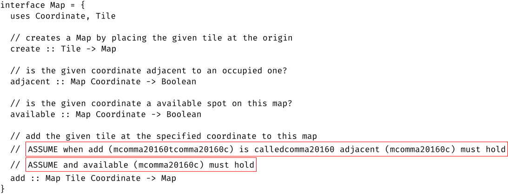
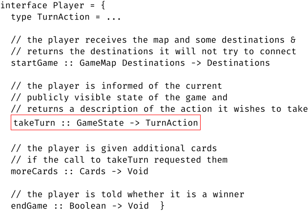
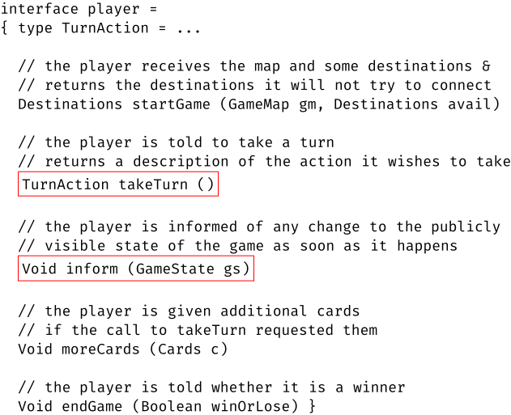

IV Programming Interfaces
13.1 An Interface is the Common Ontology for Clients and Server |
|
|
What is a software component? How are they developed? Used?
As the preceding chapter suggests, the first step of any software development
process identifies all the major components of the system, at least as much as
possible. “Identifying a component” means picking a title or name; writing
down a purpose statement; and perhaps formulating an informal description of the
functionality and other attributes. Once this much is worked out—
In essence, a component is the location of a major design decision, concerning either an piece of software that faces the external context or a one needed for internal aspects of some use-cases. A design decision means choosing one of several alternatives: the data chosen to represent some particular information or the data chosen to represent intermediate results; the interpretation mapping data to information and vice versa; some examples if the data definition is complex; plus an expression of functionality.
Creating a single container for a design decision should mean that any necessary revisions of the decision affect only this one place. That is, if unforeseen circumstances reveal the need to implement an alternative choice, a developer can go to this container and make appropriate changes only there. And ideally, such changes should not affect the functionality of the rest of the system. Software developers speak of encapsulating a design decision or of just encapsulation.
the implementation, i.e., how a developer implements the design;
the interface, i.e., how others view the component.
Figure 18 displays a schematic diagram of the
arrangement. A component’s interface shields the internal
details—

Second, everyone else working on the system must develop to the interface of the
component—
This chapter focuses on the design of component interfaces and its consequences; the next chapter is about implementing the hidden details with code that people can understand. Designing a component interface is the key step to designing and implementing the component. It is thus often equated with programming components, hence the title of this chapter. The remaining sections introduce the proper meaning of encapsulation, an approach to designing interfaces, and ways of expressing complete interfaces. In parallel, the sections also illustrate how to inspect interface designs and what such inspections reveal about system-level, architectural decisions.
13 The Nature of Interfaces
What are interfaces? How do they relate components?
While a component consists of code, an interface is a document that explains how this code should interact with the code of other components. As such they inform developers of client code about pieces of the data representations in the component (types, constructors, factories, interpretations, and even examples); about the functionality that can create, instantiate, inspect, and manipulate these data representations; about conditions that these operations must obey; and perhaps even about non-functional aspects, such as resource consumption and management. Everything else remains hidden from the developer of client components.
These documents come in many different forms and shapes. In some cases, the document is just an informal description. In some research languages, the interface is just code. For typed mainstream languages, an interface document tends to mix language constructs with informal descriptions that allow the some amount of compile-time checking of properties.
a component interface is more than a Java interface.
Take a look at a media player interface.
In order to understand how interfaces relate components, we need to take a close
look at components. For a homework in an introductory course, a component may
consist of a single class. A follow-up course may ask students to combine a
class with a Java-style interface—
Figure 19: A component as an interface between two system layers

When a component is just a single class, its code is the interface for all the objects created from this class. For example, in Java all public pieces of an object are available to developers of client code in different packages; all private pieces remain hidden; the class encapsulates these pieces. And still, a client programmer may have to read the code to understand how the object functions.
A (class) framework—
Finally, some bespoke systems may contain components that play the role of an interface. In this case, these interface components sit between two layers of components, and making their code available is needed to completely clarify some rules of interaction. This kind of component is typically beyond lower-curriculum courses and deserves an illustrative explanation.
So let’s return to figure 19, which illustrates this idea
with a diagram. Concretely, the diagram can be understood as summarizing how the
game server for Ticket to Ride—
13.1 An Interface is the Common Ontology for Clients and Server
In some language contexts, developers think of component interfaces as essential
linguistic constructs for separating the specification of functionality from its
implementation; in others, it is just a separation of such pieces in someone’s
mind. While this separation is definitely an important aspect for all kinds of
reasons—
a component interface provides a common ontology for the producers and consumers of a server component.
interface Vehicle: |
... |
int moveRight(int d) |
... |
is d short for distance?
if so, distance from where to where?
if so, distance measured in terms of which units?
Question 1 clarifies a somewhat obvious aspect of such a software system,
namely, that it must deal with distances. The very word—
While a presenter may verbally clarify the interpretation, you must insist on written clarifications. Specifically, these clarification must become a part of the method’s interface, i.e., the purpose statement. Conversely, without a written clarification, things can go horribly wrong when someone is assigned to the code and has to program to this interface.
A common ontology may require a lot more than a simple comment that explains the meaning of a parameter. Let’s once again take a close look at what a “hacker” needs to understand in order to participate in the board-game tournaments of our running example. It is best to start with a close look at figure 17, focusing on the player interface component. As the inspection of the construction plan revealed, the interface is best understood in terms of the (visible part of the) game state to which a Player component has access. In turn, this data structure refers to the map, the colored cards, the destinations, and the rails. A “hacker” can implement a player only with a complete understanding of these pieces. But this is not all. Additionally, a “hacker” must also know the protocol of how the referee interacts with the player.
the rails
the cards
the destinations
the map
the game state
the protocol: how the methods are called and in what order.
void mapForTheGame(GameMap m) |
|
Set[Destinations] choose(Set[Destinations] from) |
Which set of Destinations should choose return? The ones that the player picked or the ones the player rejected?
Which call order makes the most sense for these methods? Should the player know that mapForTheGame is called only once?
Exercise 8. Provide answers for the above two questions. Justify your answers. Work through these points with a partner.
Different kinds of interfaces call for different kinds of common ontologies. For library interfaces and for the interfaces of plug-in frameworks, the common ontology is often the responsibility of its developer, and the consumer is typically an anonymous developer. Ensuring that the interface is properly explained calls for thorough in-person inspections and reactions to on-line reviews. For bespoke interfaces specifically created for a software system, the producer of the server module and its consumers may jointly develop the common ontology; for an inspection, they may wish to get a third party involved to overcome “group think.” When the consumer of a bespoke interface is unknown, the authors of the interface document should revisit and inspect it with the help of actual an end-users once the product has been soft-launched.
Reading
Ajay Harish. When NASA Lost a Spacecraft Due to a Metric Math
Mistake. 2021.—
14 Encapsulation via Interfaces
While equipping a component with an interface has the primary objective to create a common ontology for producers and consumers, it also means that the existence of an interface relieves developers from reading the entire code of a component just because they need its services. Conversely, a component producer can rely on the existence of an interface in two ways. First, if the interface is written down up front, it can guide the implementation effort. See the next chapter for this idea. Second, the producer can use the interface to isolate design decisions from the rest of the system and thus keep the options open to change them in the future.
This last aspect is about encapsulation. Specifically, developers speak of encapsulating a design decision. Language designers recognized the importance of encapsulation a long time ago. For example, the SmallTalk language from the early 1970s hides everything but the methods of a class so that consumers are forced to use methods for any manipulation of an object. The creators of Java help developers with another form of syntactic (that is, notational) support to express encapsulation constraints: private, protected, and public class annotations. The Java compiler enforces these annotations so that consumers do not accidentally use features of an object that are supposed to be hidden. By the 1980s, typed functional languages offered linguistic constructs for specifying the interface of a component separately from the implementing code. Developers working with untyped programming languages must establish and follow some () discipline to express the same kind of separation and to enforce encapsulation.
encapsulating those pieces of knowledge of a component that restrict future changes to a data representation to this one component.
14.1 Interface Inspections for Encapsulation
To gain a solid understanding of the encapsulation concept, let’s study yet another game that could be used in the context of the running game-server example (see A Sample Project: Analysis, Discovery, Planning):
Qwirkle is a game that challenges players to construct a contiguous arrangement of square tiles on some flat surface, such as a kitchen table. The size of the arrangement is bounded only by the number of the available tiles. A player may add a tile to the map as long as one of its sides is aligned with the side of an already-present tile. Furthermore, each tile displays a shape in one of six colors. Newly added tile must satisfy certain constraints regarding the shapes and colors of all neighboring tiles.
Figure 20: Encapsulating knowledge (a Qwirkle map data representation)

This description clearly identifies four pieces of information: the arrangement, which consists of tiles plus their shapes and colors. Less obviously, it includes the information concept of neighbor, that is, that each tile has at least one and up to four neighbors. One straightforward way to represent this neighbor concept uses a notion of coordinate, associating each tile in the arrangement with one place.
Figure 20 presents a plan in the form of a doodle diagram. It sketches the four concepts and their relationship. Each box denotes a data representation of an information concept. The Map box represents the arrangement of tiles; it suggests the use of a collection to create an association between Tiles and Coordinates. The former combines an instance of Color with an instance of Shape, just as the informal description indicates.
Map is the key class, and all knowledge about the tile arrangement is found there;
similarly, Coordinate, Tile, Color, and Shape are the classes that collect the knowledge about the respective information concepts; and
if any client module needs a service about any of these five concepts, it must consult the respective class.
Hi. I am presenting the design of the central data representation for the Qwirkle game. Here is the class diagram (figure 20). | Could you explain the Coordinate class first? It looks suspicious because it comes with getters for the X and Y fields? |
Sure. Here is the code for the coordinate class (figure 21). It comes with a purpose statement. | This is a comprehensive purpose statement with the inclusion of the second line. But what is the interpretation of a Coordinate object? |
// represents either the location of tiles in the map
// or: places where a player may wish to place a tile
class Coordinate {
private int x;
private int y;
...
public int getX() { return x; }
public int getY() { return y; }
...
}
We stop here and look back. The panel takes control of the code inspection because the diagram alone may suggest a problem. While the presenter and the panel could discuss this potential problem abstractly, working with the actual code is best in this situation.
Interpretation? | Well, an X-Y pair may denote Cartesian or computer coordinates. |
Our implementation aligns with the standard computer-graphics meaning, just in case we want to add some GUI. | Should this statement be added to the implementation so that a reader of the code doesn’t have to dig through the entire class to find out? |
I will make sure an interpretation gets added. | We will need to consider whether this statement is made public or kept hidden. |
Yes. | Why does the class include plain getters for the fields? |
The two integers are private. But the Map class needs access to their values. | What for? And how are they used? |
Here is the code for Map (figure 22). | Where do the getters used? |
All the computations matching a tile to its potential neighbor use the getters. | Let’s take a look. |
class Map {
private Assoc<Tile, Coordinate> assoc = ...
...
public Optional<Tile> above(Coordinate atC) {
// extract the tile above coordinate atC
Coordinate up = new Coordinate(atC.getX(), atC.getY() - 1);
return this.assoc.retrieve(up);
}
...
}
It’s probably best to look at the computation that makes sure tiles match an up neighbor. These three lines are the key. | This comment cleanly separates one direction from the other. Can you explains the three lines? |
The first line computes the place that is exactly above the given coordinate. | How does this computation work? |
It retrieves X and Y parts, subtracts 1 from the latter, ... | Stop. Why does it subtract 1? |
Isn’t it the natural way to determine the Y part of the place above the given c? | Only if the person who reads the code of Map also knows the interpretation of the Coordinate class |
Oh. | .. which isn’t even written down. |
At this point, the panelists have clarified that the Coordinate class does not encapsulate the coordinate information concept. Even though the x and y fields are private and thus hidden, exposing plain getters implicitly leaks knowledge about the data interpretation. Here the presenters exploit this knowledge for the construction of a client class, specifically both that coordinates are integers and that if y1 < y2, then y1 is above y2. Thus computing atC.getY() - 1 gets the correct neighbor in this case. If, for some reason however, the instances of the Coordinate class should be interpreted as ordinary Cartesian coordinates, changing just Coordinate will not work.
14.2 Encapsulating Properly
whether a change in interpretation or any internal code can possibly affect application code, i.e. code that uses the functionality of the class or module.
In Java, and many object-oriented languages, the most basic meaning of “interface” is the collection of fields, methods, and other pieces of an object design that are accessible to a client programmer. This collection may or may not come with a Java interface or an Interface document; indeed, a Java component may need both.
interface ICoordinate {
// INTERPRETATION
// a data representation
// for neighbor relations
// on the Map of the game
...
// the place logically
// above this coordinate
Coordinate above();
...
Coordinate below();
...
Coordinate left();
...
Coordinate right();
}
class Coordinate {
// INTERPRETATION
// a data representation
// of computer-graphics
// integer coordinates
...
private int x;
private int y;
...
public Coordinate above() {
int newX = this.x;
int newY = this.y-1;
return
new Coordinate(newX, newY)
}
...
}
Figure 23: A Java-style class for an encapsulated coordinate representation
Let’s take a look at how a Java developer could react to the code inspection. The minimal reaction is to remove the getters from the class; in their place, the class comes with methods that determine the coordinates of neighboring places. For example, the code snippet of the Map class (in figure 22) would use the method above to compute the value of matchesUp. See the right-hand side of figure 23 for the result of such a revision.
The left-hand side of figure 23 displays a
second, complementary way of reacting to the criticism—
15 Designing an Interface
Figure 18 shows two ways of looking at an interface: as the producing developer and as the consuming one. From the perspective of the first, it is the document that guides the implementation. The component must live up to this interface; it must implement the promised functionality and everything else that the document says it delivers. From the perspective of the second, it is the document that tells everyone how to use the component.
As such, the figure suggests that an interface is the result of a “negotiation” between the two parties. In many cases, a consumer would like to get a lot more functionality than the producer wishes to show. The consumer may even like to know more about the design decisions and the resulting implementation details than the producer wishes to make publicly visible.
The word “negotiation” implies that the producer of a component interface knows the consumer, but this clearly isn’t always the case. A component might be one-of-a-kind, a part of a large bespoke system, in which case the two parties know each other and can actually negotiate the interface. But, historically, the word “component” refers to libraries and object-oriented frameworks, like the game-server interface presented in figure 19. In this case, there is no actual negotiation partner so that the development team must pick a representative. Given this variety of components, the design of an interface is clearly not going to follow one and only way either.
Since the role of an interface is to a some large extent about encapsulating
design decisions, understanding its design can also start with the question of
how much it can change. The answers differ a lot for the two ends of the
spectrum. First, when a change of a bespoke component affects its
interface—
Second, the producers of a library or framework do not know their consumers, and
they must therefore be much more careful about changes. In many cases, changing
the interface is nearly impossible. External developers may have created
extensive bodies of code relying on the published interface. Hence, removing
functionality is essentially impossible, which imposes constraints on changes to
internals of the component. Adding named functionality to the interface may
interfere with names that client programmers chose for something. Finally, even
changing a “bug”—
Exercise 9. Research how the designers of Java introduced modified
libraries when they added expressive power to the type
system—
Given an understanding of these constraints, let’s consider what goes into the design of an interface: the content and the process.
15.1 Content
The preceding sections implicitly suggest a number of items that show up in basically every interface, and they insist that the content is based on a focused and clear purpose statement for the component.
A component interface must obviously state and explain the types of data that the components makes available. This part must include enough of a data interpretation so that consumers can make sense of these types of data, but without giving away any implementation details.
create or initialize (data from) the component;
observe properties of the data originating from the component;
extract properties from the data of this component; and
update or modify the component’s data.
Developers using a typed language will express the signatures via the type language, but languages currently in use, these type languages are impoverished. Hence, an Interface specifies any constraints that the type language cannot express. These constraints come in different flavors:
restrictions on the values of individual arguments or the result;
Consider a method m that is expected to be given a natural number in the context of a type system that supports only the integer type. The Interface should add this constraint so that consumers don’t accidentally call the method with a negative number.
Conversely, a developer may wish to promise that the result of a method k is always going to be a natural number so that it be fed into a method like m: m(k (...)).
restrictions on the relationships among several arguments;
A function may expect pairs of numbers, x and y, such that x < y is always true. The Interface must express this constraint.
restrictions between the values of an argument (or several) and the values of a result.
If a method computes the area of a rectangle, its developer may add a promise like this to the interface:// produces this.width() * this.height()
Finally, an Interface often comes with constraints on the relationship among pieces of functionality. While most of these constraints are purely temporal, some also involve the values of results and arguments. In general these restrictions concern
the order in which the various pieces of functionality are used;
The example from the preceding chapter—
that start is called before extract and end— illustrates this point well. the results that calls to the same piece of functionality produce;
The run-time system of a programming language may provide a function for checking on the memory usage of a running system. If this function ignores garbage collection, the calls to this function should produce a sequence of increasing natural numbers (counting the number of bytes allocated).
the relationship between the result of one function and calls to the next one.
Suppose we wish to equip the game servers from the preceding chapter with a tournament manager that realizes knock-out tournaments. If a player object has a method for initializing its state for a game and another one for being told whether it won, then the tournament manager may promise that the first method is called after the first game only if the second one was called to inform the player of a win.
15.2 Process
Given the nature of an interface as the result of a negotiation, the design
process should involve both parties: the producer and a representative for the
consumers (or possibly all potential consumers). The producer is clearly in
charge of proposing drafts of an interface, starting from the focused purpose
statement that the project analysis produced. As the process unfolds, this
producer may also base the iterative drafting process on an imagined or sketched
implementation. The representative consumer must often—

Figure 24 shows the essential elements of this interface-design feedback loop. The process starts with the vague idea of the purpose and an implementation sketch (in someone’s mind), symbolized by the two clouds on the left. At this point, a developer should have a focused purpose and some use contexts for the component’s functionality in mind. Once the developer writes down a draft of the interface, someone else inspects and evaluates this draft from the perspective of consumers. This evaluation step is likely to involve code sketches of how the client components may use these pieces of functionality to compute some value. It yields suggestions on how to modify either the starting point or the written document or both. When the interaction has converged on a reasonably complete interface document, the producing developer can begin with the actual implementation of the component’s internals and the consumers can write additional experimental code to the interface.
Like for any building block in the world of software development, the articulation of a focused purpose statement is the key to getting the design process started and re-started. Without such a statement, it is too easy to pack too much or too little functionality into an interface. That is, when the negotiation of the interface questions arise as to whether a certain piece of functionality should be exposed, a consideration of the purpose statement will answer them.
“if coordinates exist only for the purpose of representing the four cardinal neighbor relations on Maps, why are there numeric computations on coordinates in the Map class?”
which parts of the component must remain hidden; and
which parts to make public and what explanations are needed so that client programmers can get their work done.
start by writing down a focused purpose statement and imagine some clients;
turn the purpose statement into a data interpretation (or several) and refine it to identify the public information:
the public parts of the data interpretations;
the pieces of functionality and their purpose statement;
signatures for these pieces, formal ones if a typed language is used; and
any additional constraints on these pieces of functionality.
request comments on this draft, which means sketch use cases and point out perceived weaknesses;
re-start at step 2 or even step 1, until the process converges.
15.3 A Simple Interface Design
While the inspection of the simplistic Coordinate component in Encapsulation via Interfaces illustrates the basic idea of encapsulation, it does not explain the transition We equip individual classes with an interface for illustrative purposes; no developer should do this for a single implementation. from the identification of a component to the design of its interface. But, given an understanding of the Coordinate class and its interface, the Map component is a good candidate for illustrating the design process itself.
a contiguous arrangement of square tiles on a flat surface.
Figure 25: A purpose statement for the Map component and interface
// creates a Map by placing the given tile |
create :: Tile -> Map |
// inside of Map: |
// a HashMap hm associates Coordinates with Tiles |
Map add(Map m, Tile t, Coordinate c) { |
if (!free(m, c)) |
throw Exception("the desired spot is occupied"); |
if (!adjacent(m,c)) |
throw Exception("no adjacent coordinate is occupied"); |
addToHash(m.hm, c, t); |
return m; |
} |
// inside of Player |
Pair<Tile,Coordinate>place(Map m) { |
... |
Coordinate c = .. choose a coordinate ..; |
Tile t = .. choose a tile in the possession of this player; |
if (free(m, c) && adjacent(m,c)) |
return pair(t,c); |
... |
} |

Figure 26: Draft 0, focusing on building up the tile arrangement
Figure 26 shows an intermediate design draft. The draft specifies three pieces of functionality: one for creating a map from a tile; another one for checking a property of the map; and a last one for extending an existing map. Each specification consists of a purpose statement and a functional signature. Notice the two bold-faced lines of the purpose statement for add; they tell any consumer that the signature comes with constraints that the type system cannot express. The next chapter expands on this kind of constraint.
the automated player itself, which during its turn must decide where to add tiles to the existing Map
the rule checker, which must state the laws of the game, for example those that govern a player’s additions to a Map.
The sketch of the player functionality comes with two large gaps: choosing a free coordinate and choosing a tile to place there. Of these, the first one poses an interesting choice. Using the functionality of Coordinate component, a reasonably standard graph search finds all coordinates where a player can add tiles:
 Concretely, the search starts from the origin tile and checks all four immediate
neighbors, using the four methods from the Coordinate component. When the
first step (solid arrow) to a neighbor reaches a free spot (white, e.g.,
left-most diagram), the algorithm adds the corresponding Coordinate to the
set of available ones. When such a step (dotted arrow) reaches a spot that is not
free (gray, .g., the two right-most diagrams), the search recursively
continues from these spots (dotted arrows).
Concretely, the search starts from the origin tile and checks all four immediate
neighbors, using the four methods from the Coordinate component. When the
first step (solid arrow) to a neighbor reaches a free spot (white, e.g.,
left-most diagram), the algorithm adds the corresponding Coordinate to the
set of available ones. When such a step (dotted arrow) reaches a spot that is not
free (gray, .g., the two right-most diagrams), the search recursively
continues from these spots (dotted arrows).
Exercise 10. Sketch the algorithm, assuming the functionality of Map and Coordinate is available.
// inside of Map: |
// a HashMap hm associates Coordinates with Tiles |
Set[Coordinate] availableSpots(Map m) { |
Set[Coordinate] result = EmptySet(); |
forEach(Coordinate c in keys(hm)) { |
result = setUnion(result, freeSpotsAround(m, c)); |
} |
return result; |
} |
|
// computes the subset of the four neighbors that are free |
Set[Coordinate] freeSpotsAround(Map m, Coordinate c) { |
... available(m, c) ... |
} |
// computes the set of coordinates where a tile can be added |
availableSpots :: Map -> Set[Coordinate] |
newly added tile must satisfy certain constraints regarding the shapes and colors of all neighboring tiles.
// inside of RuleChecker: |
// is placing t at c on this Map m legal? |
Boolean legalPlacement(Map m, Tile t, Coordinate c) { |
Optional[Tile] a = above(m, c); |
Optional[Tile] b = below(m, c); |
Optional[Tile] l = left(m, c); |
Optional[Tile] r = right(m, c); |
return good(t, a, b, l, r); |
} |
// inside of Map: |
// a HashMap hm associates Coordinates with Tiles |
Optional[Tile] above(Map m, Coordinate c) { |
Coordinate a = Coordinate.above(c); |
return hm[ a #:whenUndefined Optional.none ]; |
} |
// a data representation of a contiguous and
// extensible arrangement of square tiles
interface Map = {
uses Coordinate, Tile
// creates a Map by placing the given tile at the origin
create :: Tile -> Map
// is the given coordinate an available spot on this map?
available :: Map Coordinate -> Boolean
// computes the set of coordinates where a tile can be added
availableSpots :: Map -> Set[Coordinate]
// retrieves the tile that is above \| below \| to the left \|
// to the right of the given coordinate in this map, if any
above :: Map Coordinate -> Optional[Tile]
below :: Map Coordinate -> Optional[Tile]
left :: Map Coordinate -> Optional[Tile]
right :: Map Coordinate -> Optional[Tile]
// add the given tile at the specified coordinate to this map
// {boxed20162 ASSUME when add(m,t,c) is called, requires c is in available(m)}
add :: Map Tile Coordinate -> Map
}
Figure 27: Draft 1, focusing on building the arrangement and observing it
Figure 27 collects all the ideas about Map’s interface in once place: its initialization functionality (create); several functions for extracting properties (available, ..., right), and a function for updating its state (add). Based on a quick scan of the Qwirkle description, this first draft seems to serve its potential clients well. Hence it is time for presenting it to a panel of potential produces and consumers of Map.
Welcome to this session. Here is our first draft for the interface of the Map component (figure 27). | Does the class diagram (figure 20) from the component analysis review still apply? |
Yes, it does and you should keep the Coordinates, Tiles, Colors, and Shapes representations in mind. | Okay. Let’s work through the interface then. |
We decided that the purpose of Map is to represent an arrangement of square tiles. | Meaning? |
It represents tiles and how they share sides and nothing else. | Does this mean the representation ignores all other properties of the tiles, say their colors? |
This is precisely what our purpose statement is supposed to express. | Why? Why not ensure that the colors match? |
Remember that the overall analysis of the project also identified a rule-checker component (figure 17). | Ah! You want to separate functionality for placing tiles from ruling on the legality of the placement. |
Precisely. Representing the physical arrangement is one thing. Representing the rule-book is another one. | Yes. One could make a game with slightly different rules but the same physical arrangement of tiles. |
And anyone who is charged with doing so can then navigate to the rule-checker component and modify it or make a new component. | This separation is good. Arranging the tiles and ruling on the legality of the arrangement really are two different concerns. |
Any other questions? | The pre-condition of add looks expensive. Why does it not use available |
This points out an oversight. We didn’t want the available functionality in the interface. | Is it correct that available(m, c) holds precisely when c is an element of the set returned by availableSpots(m)? |
It is. | So one of these two is superfluous? |
available is from a prior draft. It should exist but it should be hidden. | Then I’d like to return to my initial point. |
Which was? | Isn’t it expensive to compute the set of all available spots when all we need is to check whether a tile can be added at a particular spot? |
That’s why available might have to exist as a hidden piece of functionality. | I see. The document expresses the constraint with the functionality that is useful to the player but check it with an inexpensive function internally? |
We also considered an alternative. The availability functionality could be computed incrementally and cached inside the implementation. | Oh, this is true. I will use this idea when we implement the interface. |
Note how this conversation is between the designers of Map’s interface and the developer who is going to implement the functionality. It points out the redundancy of one piece of functionality as well as an apparent tension between the contractual obligation for add and its actual implementation. The presenters clarify this second point with a hint to the implementer
Should we cover anything else? | I would just like to add that this idea helped me a lot with the task of implementing the player. |
Yes, that was our intention. | My player code clearly needs to call availableSpots first and then decide which of the coordinates to use for tile placements. |
This functionality should also help with the implementation of the rule checker. | It will! But, speaking of the rule checker, I have read the rules of the game in some depth. I think I will need to look inside of Coordinates. |
How come? | A player may place several tiles at once but they must all be placed in one row or in one column. |
This seems to be a question about the interface for the entire component rather than just for Map. | This is true. But can you speak to it briefly? |
Our purpose statement for Coordinate says it represents “neighborhood” relationships. So, perhaps we need functionality to check whether a set of coordinates is in a row or in a column. | That’s a good start, and I can wait until we have a concrete draft for the component interface. |
Exercise 11. Design a class in your favorite object-oriented language that implements the interface of figure 26 using an imperative style. Re-implement the interface using the same programming language in a functional style.
15.4 An Interface for a Component
The diagram of figure 20 is a good starting point for illustrating how a software developer may develop an interface. Recall that the figure relates data representations of all the Qwirkle game pieces, plus the synthetic Coordinate class and their relationships. So imagine that a developer for our game-server start-up wishes to write down an Interface for this component. Notice the capital “I” because this section is not about a Java interface even though it ends up using Java notation.
The component represents all basic game pieces for a variant of the Qwirkle game.
As for clients of this component, two come to mind: the referee that resides on the game server and the player that the start-up team must produce to test the referee. Both need to create, inspect, and manipulate maps and the tiles that make up these maps. The referee must maintain the map that all players see; as such it must be able to create the initial map, add tiles on behalf of players, check the legality of such player requests, and so on. A player component may need to compare the value of two distinct maps, each created by adding different tiles to the map that it receives when it is told to take a turn. These rough sketches of client suggest that three classes definitely must be public: Map, Tile, and Coordinate.
**Component** : represents all basic game pieces for Qwirkle
Its public classes and their public methods:
- Map : a data representation of a contiguous collection of tiles
- create : creates the map, from a starter tile, so that we do
not have to deal with the degenerate case of an empty maps
- adjacentPlaces : delivers the coordinates where tiles can
be added to this map
- addTile : adds a tile to this map at coordinate c that
is adjacent to an existing tile
CONSTRAINT: c is in this.adjacentPlaces()
- fits : checks whether a tile would fit at coordinate c
according to the rules
- render : display this map as an image
RATIONALE: looking at a visual presentation of facilitates
the creation of unit tests
- Tile : a data representation of (valid) tiles
- create : creates a tile from a shape and a color;
CONSTRAINT: consumes plain strings, then checks validity
- getters for shapes and colors (returns strings)
- Coordinate : a data representation for places on a Map
Figure 28: A draft interface for the basic games pieces component
Equipped with a purpose statement and a quick look at client components, our imaginary developer can enumerate some basic and public pieces of functionality for the three classes that are going to be public. Figure 28 displays the result of this first attempt.
// ignore the !isPresent() case
Placement pickNextCoordinate() {
Stream<Coordinate> free = map.adjacentPlaces().stream();
Coordinate best_coord = free.findFirst().get();
Tile best_tile = this.availableTiles.get(0);
for(Tile t : this.availableTiles) {
Stream<Coordinate> legal =
free.filter(c -> map.fits(c,t));
Coordinate best_t =
legal.max((c, d) -> evaluate(c,t) > evaluate(d,t)).get();
if (evaluate(best_t, t) > evaluate(best_coord, best_tile)) {
best_coord = best_t;
best_tile = t;
}
}
return new Placement(best_coord, best_tile);
}
Figure 29: A sketch of a method for picking a player’s next tile placement
Could 17 or 17.1 be incorporated into this chapter to illustrate weighing alternatives? |
|
let's work through an example with an interface for the component that represents |
all the Qwirkle game pieces |
|
then let's work through one aspect of a complex example to study serious |
alternatives: |
-- feedback-loop style design often means presenting and discussing alternatives. |
|
-- one aspect to consider: once the functionality interface is done and a first |
implementation of the component exists, it may already be time to consider |
simple performance stress tests. Example: queue |
|
-- after release: be prepared to fix; it is critical to backwards compatible as |
much as possible |
15.5 An Interface Inspection of Alternative Drafts
Reconcile with the below
the player is informed of any change to the publicly visible state of the game as soon as it happens
A combination of formal code with informal comments has direct implications for the development process. While language implementations can check the formal elements of interfaces, the informal ones don’t undergo any mechanical validation. Hence, implementing interfaces or referring to them in other modules quickly reveal flaws in their formal elements. The informal ones, however, aren’t subjected to this form of mechanical checking and tend to remain flawed more easily. It falls to the team as a whole to ensure that the interface component is complete, logically coherent, and unambiguous.
Frequent and thorough inspections can help achieve this satisfactory mix of
formal and informal interface elements. For external interfaces, it is also
necessary to work with the person in charge of writing the visible
documentation. Indeed, once a team thinks some interface documentation is ready
for release, it should still ask an outsider—
15.6 Inspections and Design Alternatives
The inspection of the construction plan points to an implicit design decision
when one of the reviewers asks about the back-and-forth between referees and
players. As imagined, the conversation glosses over the rather obvious question
whether there are alternatives to the presenter’s idea of using a
RESTful—

We discussed the various ways in which the referee may interact with the players. But, it turns out there are two alternatives. | Can you summarize these alternatives with a few words or perhaps an adjective? |
Sure. The first one is a functional interface. Here is the spec (shows figure 30). | What does “functional” mean here? |
The referee calls the player with all of the relevant data, and the player returns a complete response. | Is it correct that the signatures and the type definition of TurnAction suggest a response is a request to the referee? |
Yes. The referee executes actions on behalf of the player, especially for turns, so it can check their legality. | Agreed. The referee can check because it knows everything about the game and the players’ game pieces. |
And to take a turn, a player must know what other players have done during their turns. | When we discussed the construction plan, we settled on adding a public game state component for this purpose. |
Correct, but the existence of this component is not enough. | What else do we need? |
We need to settle on when to convey this game state from the referee to the player. | That makes sense. The signature of takeTurn tells us that the player receives a GameState when it is told to take a turn. |
Yes. That’s what “functional” means. The player can compute the desired action from the given information for the one call. | Doesn’t it need the GameMap and the Destinations? |
The referee could include those in the GameState, or we could agree that these two pieces of information are essentially global constants. | Yes, sending them over with the first method suffices. And now it is clear why this proposed take-turn method is easily testable. |
Good. Ready to move on to the alternative? | Let’s take a look at the alternative. |
The interface in figure 30 employs no known programming language (but alludes to some) and thus deserves a bit of additional explanation. It specifies five named pieces of functionality via functional signatures. Each signature lists the input types first, followed by ->, and a result type. Finally, each piece of functionality is accompanied by a purpose statement, a comment that explains what (not how) the functionality computes.

The bold-faced signature of the takeTurn functionality is an illustration of what “functional” means. The function consumes a GameState and returns a TurnAction, a type that is indicated to exist but isn’t defined yet. The takeTurn functionality is not supposed to need any other information to determine the action that the player wishes to take.
Here it is (shows figure 31). I have bold-faced the difference to the first alternative. | What does the additional functionality provide? |
It informs the player about state changes. | When does this update go out? |
As soon as one player finishes a turn. | Does the referee send out the new state or just the change information? |
It is simplest to send out the entire state. | Why is that? |
There are several kinds of changes that can happen. | True. A player may choose different kinds of actions. |
Correct, and even worse, a player may fail to respond. | It makes sense. Sending the entire state covers all possibilities. |
The signature of takeTurn in the alternative interface says that this functionality does not consume any arguments. By implication, the player must get the relevant information about the GameState from calls to other methods. This is where the additional method, inform, comes in.
Figure 32: A diagram illustrating stateful interactions (figure 31)

What these textual interfaces do not show clearly is how these functions relate to each other. A design inspection should pick up on this aspect:
| So the referee calls inform as soon as the state changes? |
Its purpose statement says so. | Oh. Is there anything better? |
We doodled a diagram on a napkin (shows figure 32). | Can you walk us through this diagram? |
The components are listed at the top. The vertical lines below are their life lines. | Does time flow from top to bottom? |
It does. And calls go from one life line to another. | Just to clarify. Do the first three calls show us how the referee sets up the game? |
They do. And the dotted lines go in the reverse direction to indicate that the result is Void. | In that case the second batch of arrows indicates how the referee runs a single turn. |
Yes! The call arrow indicates that the referee requests a decision. And the return arrow says player0 tells the referee which action it wants to take. | And then the diagram very clearly says that the referee immediately uses inform to tell the other two players of the action. |
As this dialog illustrates, this kind of diagram—
One more thing. Check the bottom of the player2 lifeline | Right, what does the triangle mean? |
It indicates that the client component terminates, possibly in an irregular fashion. | That seems to be a special case. |
We wanted your opinion about it. | Does it mean player2 does not respond? |
Precisely. | And do the next two arrows mean player0 and player1 find out about player2 and its unresponsiveness? |
We were thinking that such a player should be terminated and the others should immediately find out. | It seems to be a reasonable decision, considering that the players will exist on remote computers and such a failure could cause havoc for the overall system. |
This is what we decided | To confirm. At the bottom of the sketch, both players have the information. |
Figure 33: A diagram illustrating RESTful interactions (figure 30)

The dialog brings out how the inspecting team members can infer the correct timing of calls from these diagrams. Specifically the last two interactions clarify when player components find out what about their peers.
Additionally, the construction of the diagram allows the designers to present a potentially ambiguous error situation. Even if all components exist in a single program in one and the same programming language, a bug in the Player component could bring down the entire system. Similarly, a remote component may become unresponsive due to other reasons. Given that the team has decided that such single-component failures should not terminate the game server, the team should inspect how referee reacts in these situations and what players find out about them when.
| Do you have a doodle diagram for what you originally called the RESTful alternative? |
Yes, we have such a sequence diagram for the functional alternative (shows figure 33). | Is it worth comparing the two? |
It is is quite instructive to compare them, especially the failure scenarios. | What can fail here? The Player doesn’t have an inform functionality. |
True, but any method can fail. | Of course. It looks like you worked through a failure of the takeTurn method to player2 this time. |
Exactly. Notice how the lifeline of player2 ends during the call, before it returns a turnAction. | Is it correct that the next call of the takeTurn method to player0 delivers this knowledge about the elimination of player2 as part of gameState? |
It does. And you probably guessed that player1 has not found out yet. | Yes, that’s clear. You should add these diagrams to the repository and point to them from the README file. |
Exercise 12. Consider the follow scenario. The referee successfully calls a method of player1 but the player fails after it returns a takeAction result. When do player0 and player1 find out according to the two alternative interfaces? Sketch sequence diagrams. Work through these diagrams with a partner.
Exercise 13. The design inspection has demonstrated that the interface of figure 30 differs from the one in figure 31 in significant ways. Write down a concise explanation of an advantage or disadvantage to the developer of the game-server software, and similarly, articulate an advantage or disadvantage to the developer of the player clients. Work through these points with a partner.
16 Expressing an Interface
// represents either the location of tiles in the map
// or: places where a player may wish to place a tile
interface ICoordinate {
// INTERPRETATION a computer-graphics coordinate
// the coordinate directly above this one
Coordinate above();
// the coordinate directly below this one
Coordinate below();
...
}
Figure 34: A Java-style interface for the Coordinate class from figure 23
expression: |
- types: static checks; highly successful |
- behavioral contracts; often documented |
- pure pre and post conditions; |
- dependency on argument -- does it get checked in the post condition? |
- protocols: almost always documented only |
- order of calls |
- history dependency of calls |
contracts !!
Here is a piece of functionality:
(define (create width height channels colorspace) |
(unless (> width 0) |
(error 'create "expected width > 0: ~a" width)) |
(unless (> height 0) |
(error 'create "expected height > 0: ~a" height)) |
(define size (* width height)) |
(unless (<= size P-MAX) |
(error 'create "expected width * height <= ~a: ~a" P-MAX) size)) |
(unless (<= 3 channels 4) |
(error 'create "expected channels = 3|4: ~a" channels)) |
(unless (<= 0 colorspace 1) |
(error 'create "expected colorspace = 0|1: ~a" colorspace)) |
(define load (make-bytes (* 4 size))) |
(private-image width height channels colorspace load)) |
Instead write a contract that informs client programmers about the constraints:
[create
(-> (and/c integer? (>/c 0))
(and/c integer? (>/c 0))
(between/c 3 4)
(between/c 0 1)
image?)]
(define (create-image width height channels colorspace)
(define size (* width height))
(unless (<= size P-MAX)
(error 'create "expected width * height <= ~a: ~a" P-MAX size))
(define load (make-bytes (* 4 size)))
(private-image width height channels colorspace load))
If it is critical to let the “client” of create know about the size restriction, incorporated a constraint into the contract:
[create |
(->i ([width (and/c integer? (>/c 0))] |
[height (and/c integer? (>/c 0))] |
[channels (between/c 3 4)] |
[colorspace (between/c 0 1)]) |
#:pre (width height) (<= (* width height) P-MAX) |
(r image?))] |
|
(define (create-image-2 width height channels colorspace) |
(define size (* width height)) |
(define load (make-bytes (* 4 size))) |
(private-image width height channels colorspace load)) |
- the ``game plan'' |
- the milestones, planning one step ahead |
- iterative: refine as you go but keep the overall idea in mind |
- contracts? |
: Methods and Functions are the Basic Building Blocks |
- keep them small |
- develop them systematically: design recipe |
Old Material
Deep down buildings consist of bricks and mortar, but what people see are walls and ceilings. These large pieces hide the fundamental building blocks, and over time, what they consist of changes. Often these changes enable the construction of much larger building from one era to another.
Software systems are the analogues of entire houses or even highrises. Just like
with buildings, the fundamental building blocks—
More Old Stuff
As a result, an interface is probably the most important example of writing that isn’t (just) code. At a minimum, an interface demands supplementary descriptions of what the arguments and the results of a method or function mean. Similarly, interfaces of bespoke components or sophisticated frameworks work properly only if additional conditions are met. Often these conditions are about temporal relationships among method calls; at other times, they concern the connection between the values of different calls to the same method. Finally, contemporary software systems also offer interfaces for external developers, people whom the team members are unlikely to ever meet. These interfaces tend to impose the same kinds of logical and temporal constraints as internal ones as well as formatting specifications for remote access.
—
Designing an interface can go wrong in several ways. It may expose too much |
functionality and information about the internals, as in the Coordinate |
example of the preceding section. The interface may expose too little |
functionality. And, the interface may be in conflict with the actual |
implementation. |
|
Once released, changes to an interface should come with versioning so that the |
creators of client code can specify which version of the |
interface-implementation combination their code depends on. When the creator of |
a framework releases a new interface, the release documentation must clarify in |
what way the new version may break compatibility relative to the preceding |
version. Documenting this compatibility comparison helps programmers adjust |
application code; in the ideal case, new releases are backwards compatible, meaning client programmers can switch from the old to the new |
version without problem. |
|